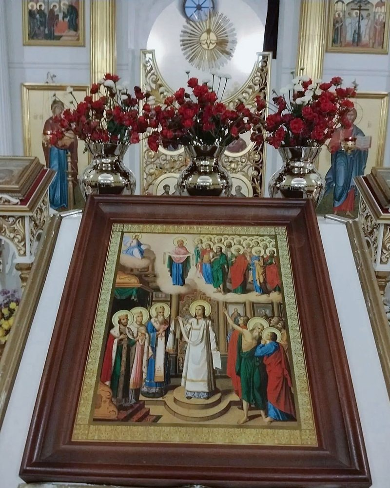
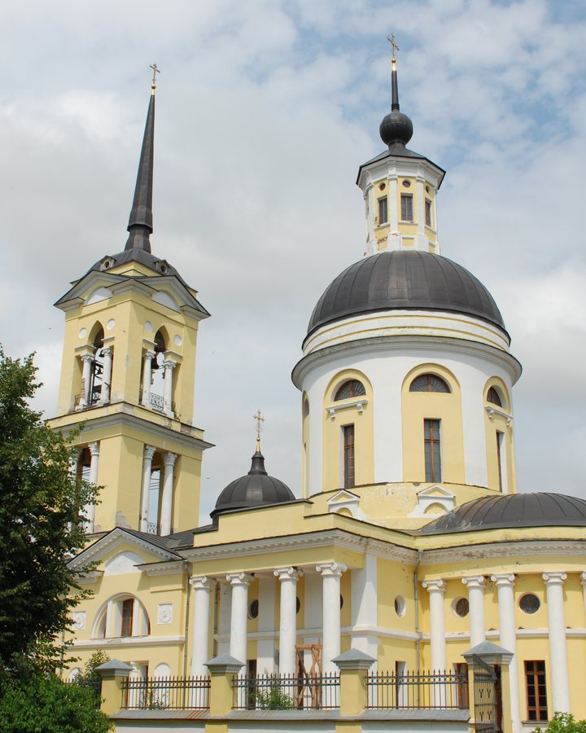
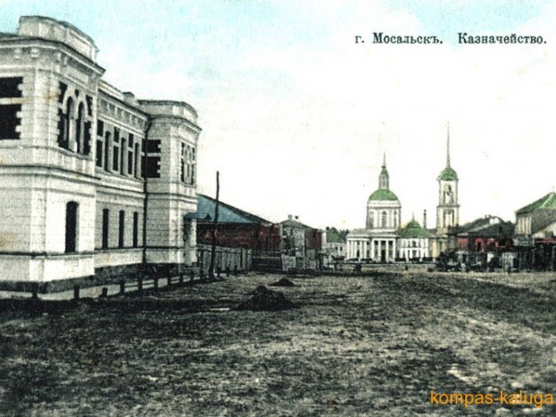
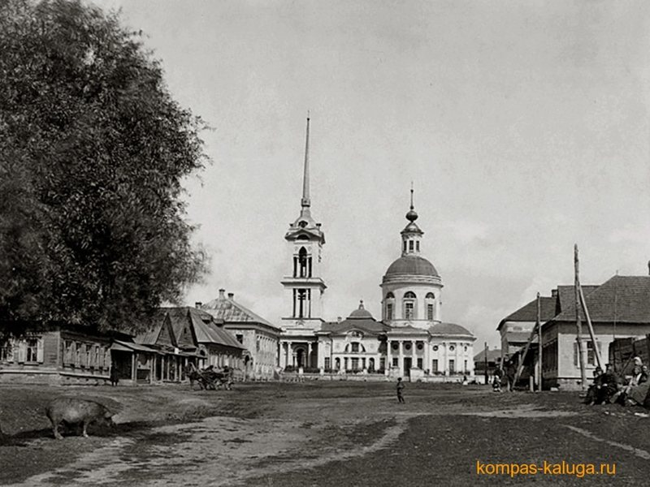
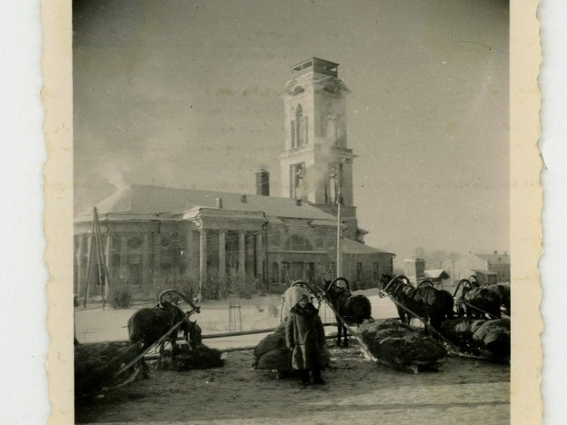
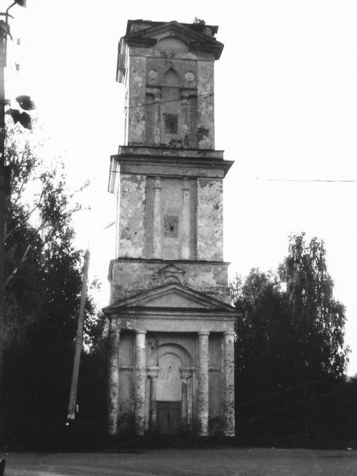
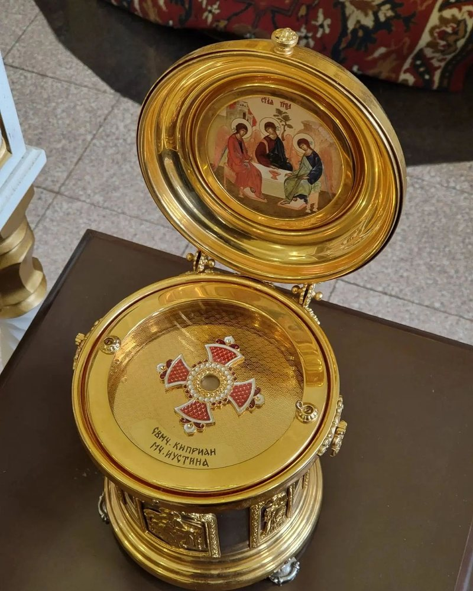
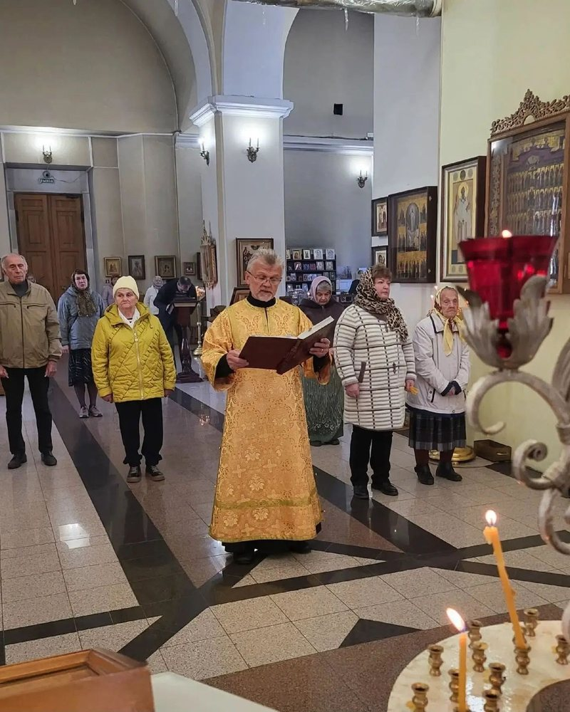

Плащаница и святыни
Одна из главных святынь. Вышита в мастерской Троице-Сергиевой лавры, находится в специальной гробнице в центральном приделе.
История, архитектура, святыни и жизнь прихода Свято-Никольского собора в Мосальске.

Кратко
Свято-Никольский собор стоит на месте торговой площади и хорошо виден с разных улиц благодаря высокой колокольне со шпилем. Это памятник архитектуры классицизма и один из символов города.
В соборе три придела: центральный — святителя Николая Чудотворца, северный — Грузинской иконы Божией Матери, южный — первоверховных апостолов Петра и Павла.
Каменный собор заложен в 1806 году на средства купца и мецената Антона Семёновича Хлюстина и освящён в 1818 году. В советские годы храм закрыли и разобрали; уцелела колокольня. В 1999–2001 годах собор воссоздали по историческому проекту, а внутреннее убранство завершили к 2021 году.
История
Собор пережил строительство, закрытие, разрушение и второе рождение. Вот главные даты.
В Мосальской церковной десятине числится небольшой деревянный храм Николы Чудотворца «внутри города» — внутри крепостной стены на Пятницкой горе. Уже тогда у него были приделы Грузинской иконы Божией Матери и апостолов Петра и Павла.
9 мая 1806 года на главной торговой площади заложили каменный собор. Средства дал купец и меценат Антон Семёнович Хлюстин. После его смерти в 1809 году строительство продолжили сыновья — Семён, Михаил и Николай. 29 сентября 1818 года собор освятил епископ Калужский и Боровский Антоний (Соколов).
В конце 1920-х — начале 1930-х с колокольни сбросили колокола и крест, иконостасы разграбили. В 1930 году собор закрыли. В нём разместился Дом культуры с танцевальным залом и кино. В том же году арестовали викарного епископа Калужской епархии Стефана (Виноградова), кафедра которого была в Никольском соборе.
После войны в здании были библиотека и кинотеатр. В 1950-х собор разобрали на кирпич. Уцелела только колокольня: её приспособили под водонапорную башню, одно время на ней была красная звезда.
В 1999 году началось восстановление. Первой отреставрировали колокольню; 1 января 2000 года над городом снова зазвучал колокольный звон. 11 июня 2000 года архиепископ Калужский и Боровский Климент освятил основание собора. Основное строительство завершили к концу 2000 года. 13 апреля 2001 года освятили и подняли крест, а 14–15 апреля в Петро-Павловском приделе отслужили первое Пасхальное богослужение.
Отделку завершали постепенно: оштукатурили и покрасили стены, восстановили иконостас, отреставрировали икону «Воскресение Христово», установили новые иконы, лампады и мощевики. По данным «Мосальской газеты», работы шли до 2021 года.
Архитектура
Крупный однокупольный храм с боковыми притворами, трапезной и трёхъярусной колокольней. Современное здание — воссоздание собора 1806–1818 годов; от исторической постройки сохранена и отреставрирована колокольня.




Исторические снимки: Соборы.ру.
Святыни
В соборе находятся частицы мощей святителя Николая Чудотворца, святителя Луки Крымского, святителя Димитрия Ростовского, апостолов Андрея Первозванного и Матфея, преподобного Агапита Киево-Печерского и других киево-печерских святых, святителя Филарета (Дроздова), вифлеемских младенцев, преподобного Серафима Саровского и других святых.

Одна из главных святынь. Вышита в мастерской Троице-Сергиевой лавры, находится в специальной гробнице в центральном приделе.

Икона «Воскресение Христово», икона новомучеников и исповедников земли Калужской, икона XVII века, переданная в 2026 году, и другие святыни.
Часовня мученицы Ларисы Готфской
В одной из башенок на территории собора открыта часовня. Иконы для неё вышиты бисером. Порядок доступа к святыням и дни, когда их выносят на поклонение, лучше уточнить в свечной лавке или у настоятеля.
Духовенство
Настоятель с октября 2020 года
Руководитель Миссионерского отдела Песоченской епархии. Окормляет Борисоглебский храм на старом кладбище. Ведёт просветительскую работу в социальных сетях и на телевидении, помогает многодетным семьям, больным детям и участникам СВО.
Клирик собора
Совершает молебны, панихиды, проводит встречи и занятия. Преподаватель воскресной школы — Евгения Геннадьевна Муллашева.
Приход
При соборе действуют воскресная школа для детей и взрослых, библейский кружок, библиотека, кинолекторий и социальное служение.
Приход посещает дом-интернат «Уют» и центр «Сила единства», помогает многодетным семьям, больным детям и участникам СВО.
Библиотека для взрослых, экспозиция старинных книг, библейский кружок с чаепитием и кинолекторий.
В помещениях воскресной школы оборудованы комнаты для небольшого числа паломников. О возможности остановиться лучше договориться заранее.
Воскресная школа
При соборе действует детская воскресная школа для детей 6–13 лет. Занятия проходят по воскресеньям после Божественной литургии, начало в 10:45, в здании воскресной школы — «домике справа».
В школе изучают основы православной веры, Священное Писание, жития святых, готовят театрализованные постановки к Рождеству и Пасхе, рисунки к конкурсам и выставкам. Работают музыкальный кружок и детская библиотека.

Прийти
С 9:00 до 13:00. Богослужения — по расписанию. Если вы впервые в храме, спросите у служителя — помогут.